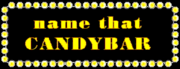
Can you identify the candybar by looking at the cross section?
Make a guess and click on the cross section to find the answer.
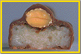 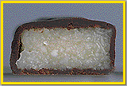 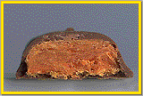 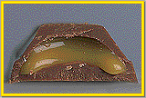 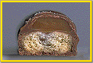 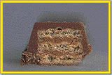 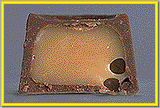 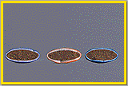 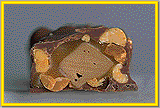 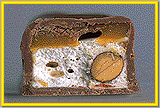 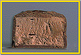 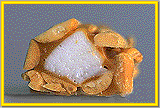
|
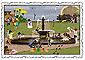 | Name that Candybar
is part of the Science Museum of Minnesota's Thinking Fountain |